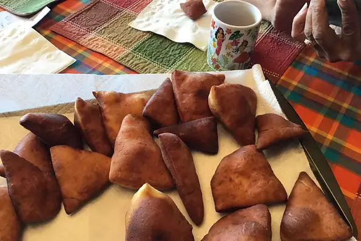

Mandazi (African Donuts)
These amazingly soft triangle-shaped donuts are very famous in East Africa where I come from. They are excellent with a cup of tea or coffee. The dash of cardamom adds an authentic taste which makes it different from regular donuts. You can serve it with either honey or jam.

Prep: 15 mins
Cook: 15 mins
Additional: 1 hr
Total: 1 hr 30 mins
Servings: 18
Ingredients
- 1 cup warm milk
- ¼ cup vegetable oil
- ¼ cup fine white sugar
- 1 medium egg
- 2 teaspoons instant yeast
- ½ teaspoon saltl
- ½ teaspoon ground cardamom
- 3 ½ cups all-purpose flour, sifted
- vegetable oil for deep frying
Directions
- Combine milk, 1/4 cup vegetable oil, sugar, egg, instant yeast, salt, and cardamom in a large bowl. Mix in flour, 1 cup at a time, until dough comes together and is easily handled. Knead dough on a flat work surface until no longer sticky.
- Put dough back in the bowl, cover, and let rise in a warm area until doubled, about 1 hour.
- Press dough down gently. Knead it briefly and divide it into 4 portions. Roll each portion into a ball; keep covered with a cloth to prevent them from drying out.
- Roll 1 ball into a 1/3-inch-thick circle on a floured work surface. Cut into 4 triangles using a pizza cutter. Repeat with remaining balls of dough, keeping other dough covered.
- Heat oil in a deep-fryer or large saucepan over medium heat. Fry dough triangles 3 or 4 at a time, without overcrowding, until puffed like balloons, 1 to 2 minutes. Turn and continue frying until golden brown, 1 to 2 minutes more. Drain on paper towels. Repeat with remaining dough.
- Serve and Eat
Cook's Notes:
Substitute shortening for the vegetable oil if preferred.
Nutrition Facts
Per Serving:160 calories; protein 3.5g; carbohydrates 22.2g; fat 6.3g; cholesterol 11.4mg; sodium 74.8mg.
Go to: allrecipes for full details
Contact Wilbrod on: ntawihawilbrod@gmail.com or
n.wilbrod@yahoo.com